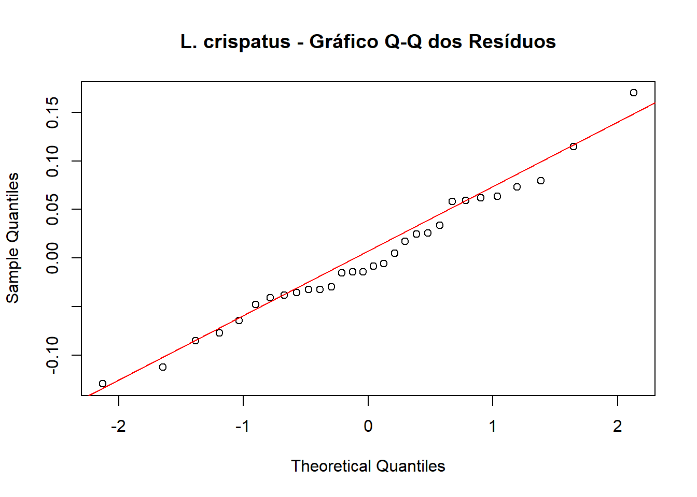
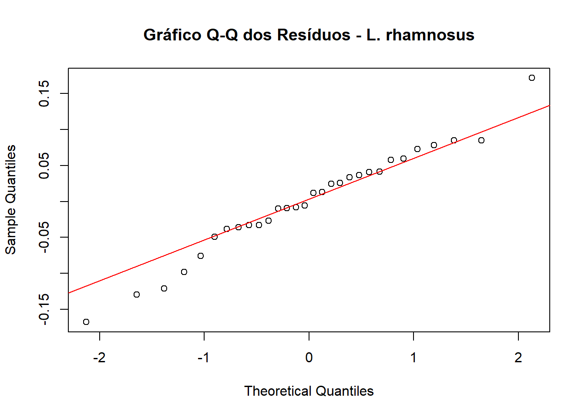

Os seguintes objetos são mascarados por 'package:stats':
filter, lag
Os seguintes objetos são mascarados por 'package:base':
intersect, setdiff, setequal, union
Code
library("multcomp")
Carregando pacotes exigidos: mvtnorm
Carregando pacotes exigidos: survival
Carregando pacotes exigidos: TH.data
Carregando pacotes exigidos: MASS
Anexando pacote: 'MASS'
O seguinte objeto é mascarado por 'package:dplyr':
select
Anexando pacote: 'TH.data'
O seguinte objeto é mascarado por 'package:MASS':
geyser
Code
library(here)
here() starts at C:/Users/leozi/OneDrive/Documentos/AnaliseLaboritorio
Introdução e Preparação dos Dados
Code
dados <-readRDS(here("dados", "dados_processados.rds"))df_preparado <- dados %>%mutate(# Garante que não haja divisão por zero se Vivas + Mortas for 0Total = Vivas + Mortas,# Calcula a proporção de células vivas (valor entre 0 e 1)Proporcao_Vivas =ifelse(Total ==0, 0, Vivas / Total),# Aplica a transformação Arco-Seno da Raiz Quadrada na proporção# Assim como muitas transformações, essa foi feita para aproximar os dados de uma distruibuição normalProporcao_Transformada =asin(sqrt(Proporcao_Vivas)),# Garante que as variáveis categóricas sejam "fatores"# E define "Controle" como o nível de referência para comparaçõesSobrenadante =as.factor(Sobrenadante),Tratamento =factor(Tratamento, levels =c("Controle", "Veículo", "1,25%", "10%", "25%")) )print(head(df_preparado))
Para realizar uma análise estatística robusta, os dados brutos precisam ser processados. A simples contagem de células vivas pode ser enganosa, pois não leva em conta o número total de células em cada amostra. Por isso, seguimos de dois passos:
Cálculo da Proporção: Convertemos os dados para a proporção de células vivas (Proporcao_Vivas), que é uma métrica normalizada e justa para comparação.
Transformação Arco-Seno: Dados de proporção frequentemente não seguem uma distribuição normal e não possuem variâncias homogêneas, violando premissas de testes como a ANOVA. A transformação Arco-Seno da Raiz Quadrada (asin(sqrt(x))) corrige essas características, estabilizando a variância e aproximando os dados da normalidade.
Análise para Lactobacillus crispatus
2.1 Premissas da ANOVA
2.1.1 Homogeneidade das variâncias - Teste de Bartlett
Uma das premissas da ANOVA
Antes de aplicar a ANOVA, precisamos verificar uma de suas principais premissas: a de que as variâncias dos diferentes grupos de tratamento são homogêneas. O Teste de Bartlett é usado para isso. A hipótese nula \(H_0\) é que todas as variâncias são iguais.
\(H_0:\) As variâncias são iguais entre os grupos de tratamento.
\(H_1:\) Pelo menos um grupo tem variância diferente.
Code
cat("1. Teste de Bartlett para Homogeneidade de Variâncias:\n")
1. Teste de Bartlett para Homogeneidade de Variâncias:
Code
teste_bartlett_crispatus <-bartlett.test(Proporcao_Transformada ~ Tratamento, data = df_crispatus)print(teste_bartlett_crispatus)
Bartlett test of homogeneity of variances
data: Proporcao_Transformada by Tratamento
Bartlett's K-squared = 3.2238, df = 4, p-value = 0.5211
p-valor = 0.5211 | \(\alpha = 0.05\): não rejeitamos a hipótese nula. Isso significa que não há evidências para sugerir que as variâncias dos grupos sejam diferentes. Portanto, a premissa de homogeneidade da ANOVA foi atendida.
2.1.2. Teste de Normalidade dos Resíduos - Shapiro-Wilk
Agora, ajustamos o modelo ANOVA para extrair seus resíduos e verificar se eles seguem uma distribuição normal. A hipótese nula (H_0) é que os dados são normalmente distribuídos. Usamos o teste de Shapiro-Wilk para uma avaliação estatística e um gráfico Q-Q para uma inspeção visual.
Code
# Instanciando o modelo para captura dos resuduosmodelo_anova_crispatus <-aov(Proporcao_Transformada ~ Tratamento, data = df_crispatus)residuos_crispatus <-residuals(modelo_anova_crispatus)# Shapiro-Wilkcat("Teste de Shapiro-Wilk para Normalidade dos Resíduos:\n")
Teste de Shapiro-Wilk para Normalidade dos Resíduos:
Shapiro-Wilk normality test
data: residuos_crispatus
W = 0.98156, p-value = 0.8654
Code
qqnorm(residuos_crispatus, main ="L. crispatus - Gráfico Q-Q dos Resíduos")qqline(residuos_crispatus, col ="red", lwd =1)

O que é o Gráfico Q-Q?
Ao invés de plotarmos uma distribuição comum, utilizamos esse gráfico para comparar os quantis dos seus dados (dados observados) com os quantis de uma distribuição teórica perfeita, geralmente a Distribuição Normal. Quanto mais os dados seguirem a linha destacada, mais adequados estão a uma distribuição.
Eixo X: Os quantis teóricos. (Onde os pontos deveriam estar se seus dados seguissem perfeitamente uma distribuição normal).
Eixo Y: Os quantis da sua amostra de dados. (Onde seus pontos de dados realmente estão).
Interpretação:
O teste de Shapiro-Wilk resultou em um p-valor de 0.8654. Como p > 0.05, não rejeitamos a hipótese nula, indicando que os resíduos do modelo são consistentes com uma distribuição normal. O gráfico Q-Q corrobora essa conclusão, pois os pontos se alinham bem ao longo da linha teórica vermelha.
PREMISSAS VALIDADAS
2.2 ANOVA
Este teste nos dirá se existe alguma diferença estatisticamente significativa entre as médias de pelo menos dois dos grupos de tratamento. A hipótese nula \(H_0\) é que as médias de todos os grupos são iguais.
\(H_0:\) A média da proporção transformada é a mesma para todos os tratamentos
\(H_1:\) A média de pelo menos um tratamento é diferente.
Code
cat("Análise de Variância - ANOVA:\n")
Análise de Variância - ANOVA:
Code
print(summary(modelo_anova_crispatus))
Df Sum Sq Mean Sq F value Pr(>F)
Tratamento 4 0.3499 0.08747 17 7.5e-07 ***
Residuals 25 0.1287 0.00515
---
Signif. codes: 0 '***' 0.001 '**' 0.01 '*' 0.05 '.' 0.1 ' ' 1
Interpretação:
p-valor = 7.5e-07 ou 0.00000075 | \(\alpha = 0.05\): rejeitamos a hipótese nula. Esta é uma forte evidência de que existe uma diferença significativa na viabilidade celular entre os grupos de tratamento para Lactobacillus crispatus.
2.3 Post-hoc
O Teste Post-Hoc de Dunnett foi aplicado para identificar quais tratamentos específicos tiveram um efeito diferente do grupo Controle.
Code
cat("Teste Post-Hoc de Dunnett (Comparações com o Controle):\n")
Teste Post-Hoc de Dunnett (Comparações com o Controle):
Veículo vs. Controle (p = 0.681): Não há diferença estatisticamente significativa.
1,25% vs. Controle (p = 0.090): Não há diferença estatisticamente significativa no nível de alpha=0.05.
10% vs. Controle (p = 0.007): Há uma redução estatisticamente significativa na viabilidade celular (p < 0.01).
25% vs. Controle (p < 0.001): Há uma redução altamente significativa na viabilidade celular.
Os tratamentos nas concentrações de 10% e 25% foram eficazes em reduzir a viabilidade de Lactobacillus crispatus de forma significativa quando comparados ao grupo Controle. A concentração de 1,25% e o Veículo não apresentaram efeito citotóxico. A coluna Estimate mostra valores negativos para todos, indicando que os tratamentos tenderam a reduzir a viabilidade, mas essa redução só foi estatisticamente relevante para os grupos de 10% e 25%.
Lactobacillus rhamnosus
3.1 Premissas da ANOVA
3.1.1 Homogeneidade das variâncias - Teste de Bartlett
Primeiro, verificamos a homogeneidade das variâncias para os grupos de L. rhamnosus.
Code
# 5.1. Teste de Homogeneidade de Variâncias (Bartlett)cat("Teste de Bartlett para Homogeneidade de Variâncias:\n")
Teste de Bartlett para Homogeneidade de Variâncias:
Code
teste_bartlett_rhamnosus <-bartlett.test(Proporcao_Transformada ~ Tratamento, data = df_rhamnosus)print(teste_bartlett_rhamnosus)
Bartlett test of homogeneity of variances
data: Proporcao_Transformada by Tratamento
Bartlett's K-squared = 4.786, df = 4, p-value = 0.31
Interpretação:
O Teste de Bartlett para os dados de Lactobacillus rhamnosus resultou em um p-valor de 0.31. Como este valor é consideravelmente maior que o nível de significância padrão ( alpha=0.05), não há evidências para rejeitar a hipótese nula (H_0).
Isso significa que podemos assumir que as variâncias dos diferentes grupos de tratamento são homogêneas (estatisticamente iguais).
3.1.2 Teste de Normalidade dos Resíduos - Shapiro-Wilk
Code
# Ajusta o modelo para obter os resíduosmodelo_anova_rhamnosus <-aov(Proporcao_Transformada ~ Tratamento, data = df_rhamnosus)residuos_rhamnosus <-residuals(modelo_anova_rhamnosus)# Teste de Shapiro-Wilkcat("Teste de Shapiro-Wilk para Normalidade dos Resíduos:\n")
Teste de Shapiro-Wilk para Normalidade dos Resíduos:
Shapiro-Wilk normality test
data: residuos_rhamnosus
W = 0.97745, p-value = 0.7546
Code
# Gráfico Q-Q para inspeção visualqqnorm(residuos_rhamnosus, main ="Gráfico Q-Q dos Resíduos - L. rhamnosus")qqline(residuos_rhamnosus, col ="red", lwd =1)

Interpretação:
O teste de Shapiro-Wilk resultou em um p-valor de 0.7546. Como p > 0.05, não rejeitamos a hipótese nula, indicando que os resíduos do modelo são consistentes com uma distribuição normal. O gráfico Q-Q corrobora essa conclusão, pois os pontos se alinham bem ao longo da linha teórica vermelha. Ambas as premissas da ANOVA foram atendidas.
PREMISSAS VALIDADAS
3.2 ANOVA
Code
# 5.2. Modelo ANOVAcat("Análise de Variância (ANOVA):\n")
Análise de Variância (ANOVA):
Code
modelo_anova_rhamnosus <-aov(Proporcao_Transformada ~ Tratamento, data = df_rhamnosus)print(summary(modelo_anova_rhamnosus))
Df Sum Sq Mean Sq F value Pr(>F)
Tratamento 4 0.9141 0.22851 37.34 3.35e-10 ***
Residuals 25 0.1530 0.00612
---
Signif. codes: 0 '***' 0.001 '**' 0.01 '*' 0.05 '.' 0.1 ' ' 1
Interpretação:
A Análise de Variância (ANOVA) resultou em um p-valor de 3.35e-10 (ou 0.000000000335). Este valor é extraordinariamente menor que o nosso nível de significância(\(\alpha\)) de 0.05. Portanto, rejeitamos a hipótese nula de que as médias são iguais. A conclusão é que há uma evidência estatística muito forte de que o tipo de tratamento tem um efeito significativo na viabilidade celular de Lactobacillus rhamnosus.
3.3 Post-hoc
Finalmente, identificamos quais tratamentos específicos diferem do Controle para esta espécie.
Veículo vs. Controle (p = 0.739): Nenhuma diferença significativa. O veículo não afetou a viabilidade celular.
1,25% vs. Controle (p = 0.005): Há uma diferença estatisticamente significativa (p < 0.01). Mesmo na menor concentração, o tratamento já reduziu a viabilidade.
10% vs. Controle (p < 0.001): Há uma diferença altamente significativa.
25% vs. Controle (p < 0.001): Há uma diferença altamente significativa, mostrando o efeito mais forte.
Para L. rhamnosus, todas as concentrações do tratamento (1,25%, 10% e 25%) foram eficazes em reduzir significativamente a viabilidade celular em comparação ao Controle. O efeito foi dose-dependente, tornando-se mais pronunciado à medida que a concentração aumentava, como pode ser visto pelo aumento do valor de t e pela diminuição do p-valor.